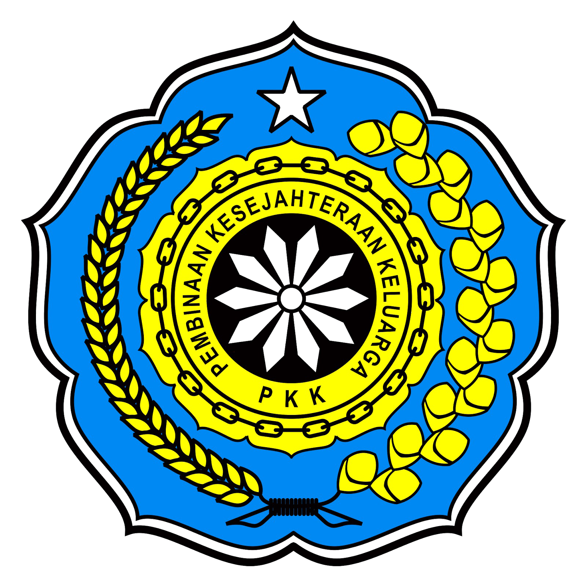

LEMBAGA MASYARAKAT

LPM
Lembaga Pemberdayaan Masyarakat adalah Organisasi Penyusun rencana pembangunan, swadaya gotong royong, dan pengendalikan.

PKK
Organisasi kemasyarakatan yang memberdayakan wanita untuk turut berpartisipasi dalam pembangunan Indonesia.

Remaja Masjid
Organisasi Remaja Masjid yang buat oleh pemuda/pemudi di dalam desa. untuk mengorganisir kegiatan muslim dalam desa serta pemakmuran syiar-syiar islam dalam desa.
LINMAS
LINMAS (Perlindungan Masyarakat) -- Satuan Linmas adalah warga masyarakat yang disiapkan dan dibekali pengetahuan serta keterampilan untuk melaksanakan kegiatan penanganan bencana guna mengurangi dan memperkecil akibat bencana, serta ikut memelihara keamanan, ketentraman dan ketertiban masyarakat